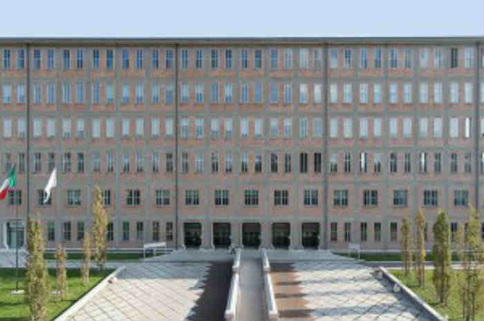
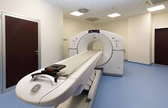
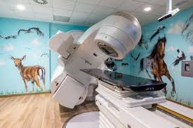

L'azienda
L’Azienda Unità Sanitaria Locale (AUSL) di Reggio Emilia è l’ente pubblico responsabile della gestione e dell'erogazione dei servizi sanitari sull'intero territorio provinciale. Fondata per garantire il diritto alla salute dei cittadini, l’azienda si occupa della pianificazione e dell’organizzazione delle cure primarie, specialistiche e ospedaliere.
Le principali attività dell'ente includono:
- Gestione Ospedaliera
- Assistenza Territoriale
- Prevenzione e Sanità Pubblica
- Servizi di Digitalizzazione
Introduzione
La giornata è iniziata con un incontro con il Responsabile dei Sistemi Informativi dell'AUSL, che ci ha illustrato la complessità della gestione IT in ambito sanitario e il suo percorso di carriera. Successivamente, abbiamo seguito un'introduzione teorica tenuta da personale medico su temi come la radioattività e l'interazione dei fasci radioattivi con il corpo umano, prima di accedere ai reparti specialistici dell'Arcispedale Santa Maria Nuova.
Reparto medicina nucleare

Nel reparto di Medicina Nucleare, ho visitato il laboratorio dove vengono preparati i radiofarmaci. Qui ho visto le attrezzature piombate per il trasporto sicuro degli isotopi e il Ciclotrone, un acceleratore di particelle fondamentale per produrre emettitori di positroni a vita breve. Ci hanno spiegato come questi traccianti vengano iniettati nel paziente per eseguire esami di diagnostica PET-CT, permettendo di individuare patologie neoplastiche grazie a meccanismi funzionali, diversamente da una normale ecografia. Ho potuto osservare le stanze di somministrazione e quelle dedicate alla degenza dei pazienti radioattivi, visualizzando infine alcune scansioni per capire come il farmaco "illumini" le zone da analizzare.
Reparto radioterapia

Nel reparto di Radioterapia, la visita si è spostata sui macchinari per la cura dei tumori. Ho visto da vicino l’Acceleratore Lineare per la radioterapia a fasci esterni e altri sistemi avanzati come la Tomoterapia. Mi è stato spiegato il complesso processo di pianificazione: prima un fisico medico e poi un medico oncologo programmano il macchinario per concentrare le radiazioni sul bersaglio (tumorale) risparmiando i tessuti sani. Ho visto strumenti particolari come i sistemi di immobilizzazione per i pazienti e i sensori per il gating respiratorio (che sincronizza il raggio con il respiro). Infine, abbiamo visionato macchinari specifici per la Brachiterapia (usata per il tumore all'utero) e per il trattamento di patologie della pelle.
Commento
Ho trovato questa attività estremamente interessante, anche se mi ha confermato che non vorrei intraprendere una carriera nel settore medico o fisico. È stato però affascinante scoprire una branca della medicina così tecnologica, che solitamente resta nascosta agli occhi dei non addetti ai lavori.
A livello emotivo, la visita mi ha toccato profondamente. Entrare in reparti dove si trattano malattie spesso gravi crea un'atmosfera particolare; immedesimarsi nel paziente fa impressione, specialmente quando capisci quanta scienza, quanti macchinari e quante persone lavorano dietro a quello che, agli occhi di chi soffre, sembra solo un semplice farmaco o una seduta su un lettino. Avendo avuto dei cari che hanno affrontato percorsi simili in passato, vedere l'organizzazione e la tecnologia che sta dietro alle loro cure è stato emozionante e mi ha aiutato a dare un volto concreto a processi scientifici che prima conoscevo solo per nome.
Competenze attivate
Trasversali